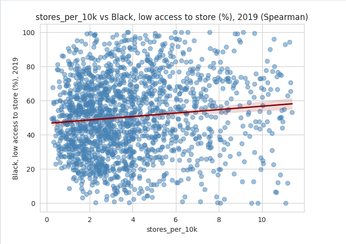
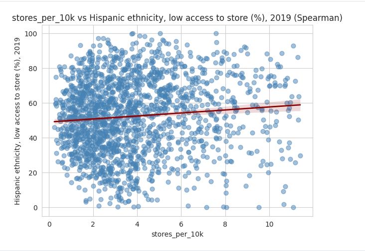
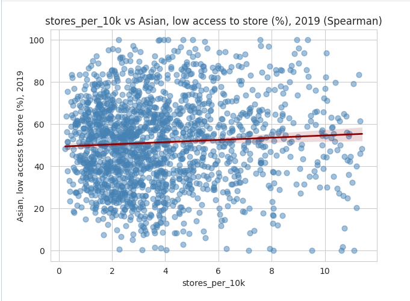
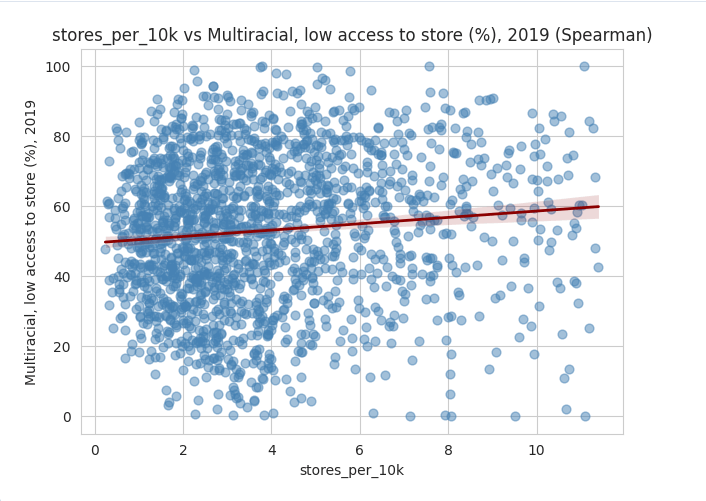
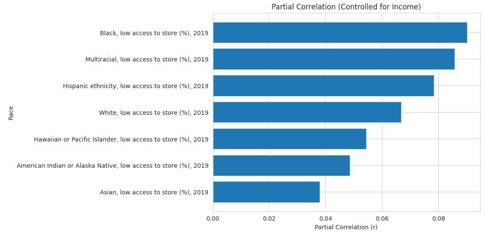
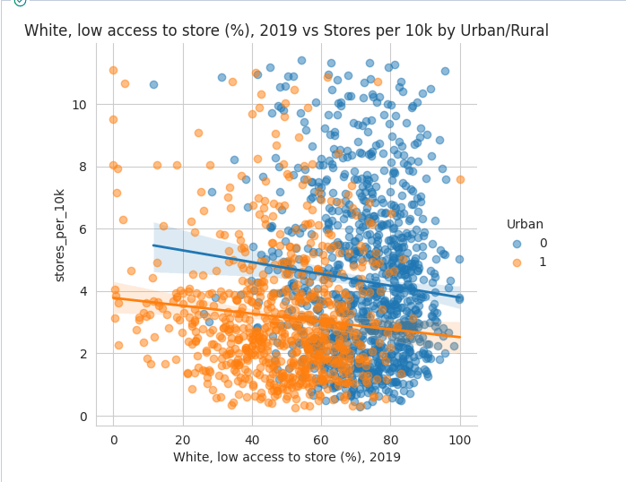
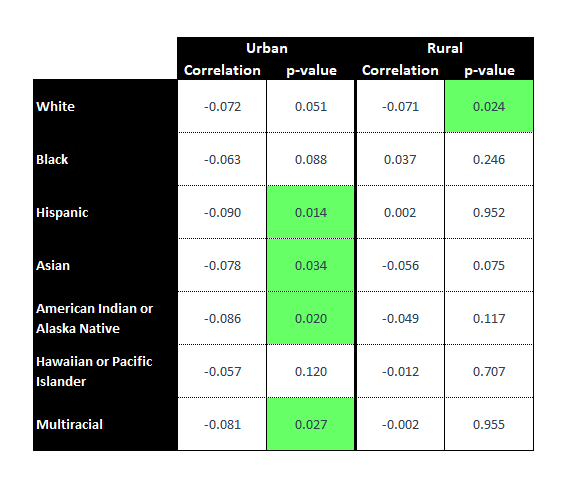
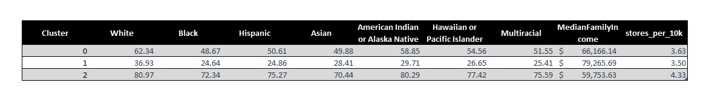
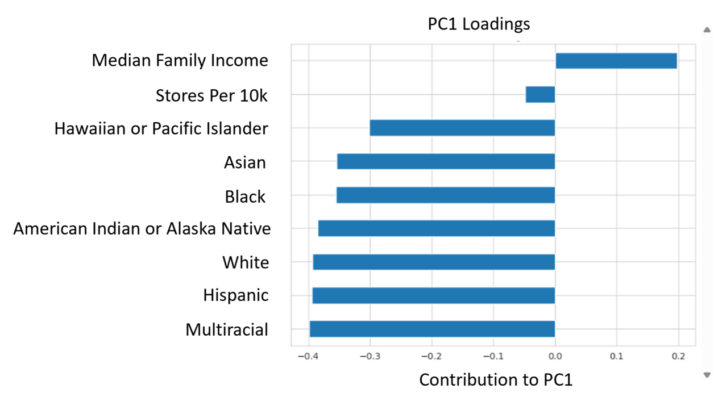
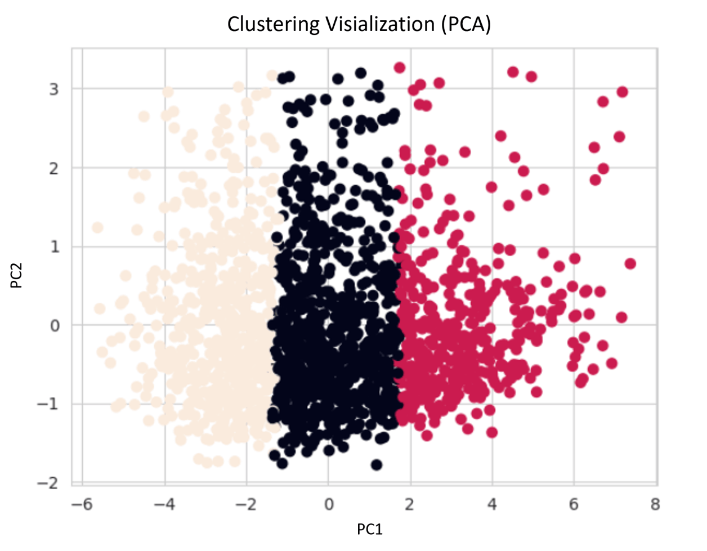

Access to food is a key factor in quality of life, but it is not evenly distributed. Even within the same area, differences in income, location, and racial composition can lead to unequal access.
This analysis focuses on one question:
Is there a relationship between racial composition and the availability of grocery stores and supermarkets?
Using county-level data on low food access across racial groups, I explore whether a consistent relationship exists and what that could imply for future policy decisions.
Before reviewing the results, it is important to understand how to interpret the data.
To begin, I used the Spearman correlation method to test for direct relationships between racial composition and store availability.
All groups showed statistically significant results (p < 0.05). However, correlation values ranged only from 0 to 0.12, indicating that these relationships are extremely weak in practice.
The scatterplots below illustrate this result. Each point represents a county, and the red line shows the trend. The near-flat slopes highlight the minimal real-world impact.





To refine the analysis, I controlled for median family income within each low-access racial group to see if stronger relationships would emerge.
The results were largely consistent with the previous test, with a few key differences. The Asian low-access population no longer showed a statistically significant relationship, and overall correlation values moved even closer to zero.
This suggests that income alone is not enough to explain differences in food access. Since multiple factors likely influence these outcomes, I introduced an additional variable in the next step of the analysis.

To account for geographic differences, I grouped counties based on whether they were classified as rural or urban by the USDA. The goal was to determine whether the physical composition of a county influenced the relationship between store availability and racial groups with low food access.

This analysis revealed a clear divide between rural and urban areas. Statistically significant relationships did not overlap between the two—each appeared exclusively in either rural or urban counties. Most were found in urban areas, with the low-access White population being the only group showing a relationship in rural counties.
However, as in previous tests, all correlation values remained very close to zero. This indicates that, despite being statistically significant, these relationships still lack meaningful real-world impact.
Since earlier tests did not reveal any practically significant relationships, I shifted focus to the overall structure of the data. Using K-means clustering and the Elbow Method, I examined whether natural groupings would emerge.

The clustering results revealed a clear gradient across low-access populations. The three clusters formed a progression from lower to higher percentages, rather than distinct, separated groups.
In contrast, median family income showed an inverse pattern: clusters with higher income consistently had lower percentages of low-access populations. This suggests a strong relationship between income and food accessibility.
Notably, the number of stores per 10,000 people remained nearly constant across all clusters. This indicates that store availability alone has little impact on whether a population experiences low food access.
This pattern is reinforced by the Principal Component Analysis (PCA) results. The first principal component (PC1), which explains most of the variation in the data, is driven primarily by income and low-access population variables, not store availability.
Together, these results point to a clear conclusion: food access is strongly linked to income, while the presence of stores plays a minimal role.

The factors and their directions that most influence the behavior of the data.

Principal Component Analysis Scatterplot.
This analysis did not identify any relationships between low-access racial groups and store availability that were both statistically and practically significant.
This does not mean such relationships do not exist. Rather, it suggests that food access is likely influenced by a more complex combination of factors that may vary across different populations.
As a result, no clear policy recommendations can be made from this analysis alone. Further research incorporating a broader range of variables will be necessary to better understand and address disparities in food access.